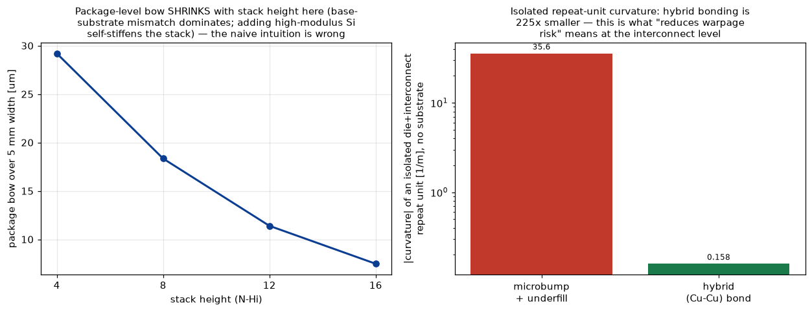
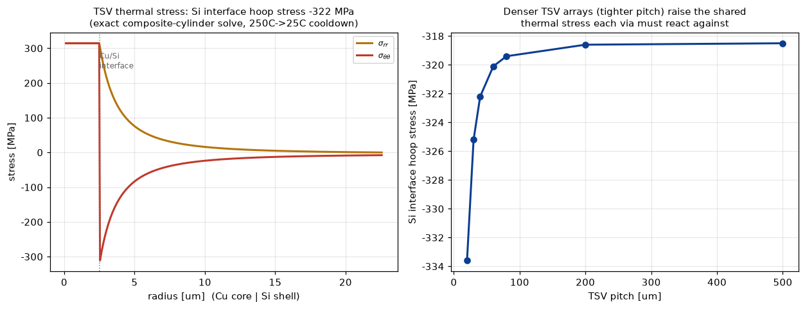

HBM4世代の16-Hiスタックで話題の2工程を、公開されない実装ノウハウの代わりに教科書物理から自作：積層反り（ラミネート梁理論）とTSV熱応力（コンポジット円筒の厳密弾性解）。どちらも解析解・恒等式で閉じた検証を持ち、「なぜ業界がハイブリッドボンディングに向かうのか」を数値で示す。
ダイ・マイクロバンプ/アンダーフィル・基板それぞれのヤング率Eと熱膨張係数αから、力の釣り合い＋モーメントの釣り合い（2×2の厳密線形系）でスタック全体の曲率κを解く。20,000分割の独立な数値積分と誤差0.001%で一致、単層・同一材質N層はいずれも厳密にゼロ曲率を再現（縮退ケースの解析的検証）。基板支配のこの幾何では、段数を4→16-Hiに増やすほど反り量は29.2→7.5µmへ減少——高剛性のSiが増えるほどスタック自身が「自己剛性化」するためで、素朴な「積むほど反る」という直感は誤り、という結果を正直に報告する。一方、基板を切り離しダイ+接合層1ユニットだけで比較すると、マイクロバンプ接合とハイブリッド（Cu-Cu）接合の曲率差は225倍——これが「ハイブリッドボンディングが反りリスクを下げる」の実体。

CuビアとSiが接合温度から室温へ冷える過程を、コンポジット円筒（同心円筒）の軸対称熱弾性厳密解で解く。各材質内部ではオイラー・コーシー型ODE u''+u'/r-u/r²=0（一般解 u=C1r+C2/r）が厳密に成立——近似ではなく解析解そのもの。変位連続・応力連続・外周自由境界の3条件から3×3線形系を組み立て、材質を同一にすると全応力が厳密にゼロになることで検証（機械精度で確認）。TSV直径5µm・ピッチ40µmの実用値では、Cuコアは314MPaの引張、Si界面は322MPaのフープ応力。ピッチを20→500µmへ広げるとSi界面応力は333.6→318.5MPaへ滑らかに収束——希薄極限への収束という別の恒等式でも解の健全性を確認できる。TSVキープアウトゾーンとCuパンピングという、後工程が避けて通れない2つの信頼性問題の定量的な土台。

関連（実装済み）：3D NANDデバイス物理・表面粗さ・真円度計測。出所：hbmpkg/{hbm_stacking, tsv_thermal_stress}.py。